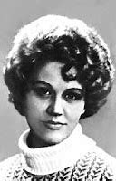
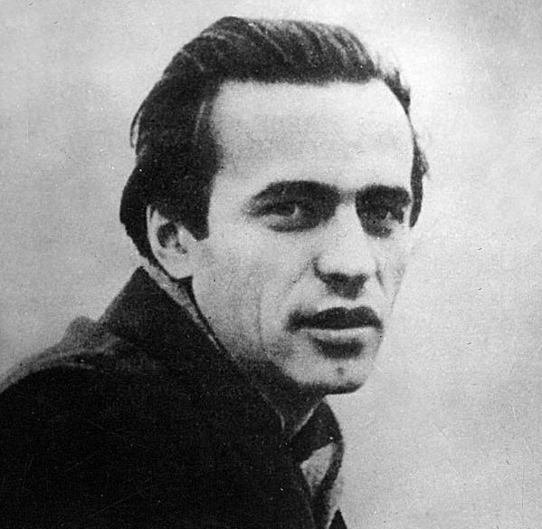
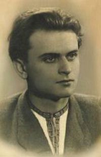

Ліна Костенко

І не знецінюйте коштовне,
не загубіться у юрбі.
Не проміняйте неповторне
на сто ерзаців у собі!
Народилася 19 березня 1930 року на Київщині в провінційній вчительській сім'і, в 1956 році закінчила Московський літературний інститут. Дебютувала збіркою поезій "Проміння землі" (1957), слідом з'явилися "Вітрила" (1958) і "Мандрівки серця" (1961). Потім її поетичному слову було оголошено заборону. Твори Ліни Костенко не виходили окремими виданнями аж до 1977-го, до появи збірки "Над берегами вічної ріки". Поетеса писала "в шухляду". Це ж тоді були написані "Берестечко", і "Маруся Чурай", і вірші, що склали книжки "Над берегами вічної ріки" та "Неповторність" (1980).У 1987 році виходить книжка "Сад нетанучих скульптур" з трьома новими поемами "Скіфська одісея", "Сніг у Флоренції", "Дума про братів неазовських".
Ліна Костенко стала "предтечею" шістдесятників, однією з тих, хто повертав поетичному слову естетичну повноцінність, хто рішуче ламав художні критерії. Вона - рідкісний майстер у володінні словом; несподіваність і духовна пластика її поетичних образів несе в собі особливу емоційну снагу.
Василь Симоненко

І я не чув, як жайвір в небі тане,
Кого остерігає з висоти...
Прийшла любов непрохана й неждана -
Ну як мені за нею не піти?
Народився 8 січня 1935р. на Полтавщині, закінчив факультет журналістики Київського університету. Далі - робота в газетах і літературна творчість. Помер 13 грудня 1963 року. Між цими датами - напівголодне дитинство, лихоліття і злидні, студенське братерство, творчі суперечки, вихід єдиної прижиттєвої збірки "Тиша і грім" (1962). Збірка - виквіт студентської юності та перших років трудового життя поета; вірші щирі, пройняті світлим юнацьким смутком од неподіленого романтичного кохання. Друга, посмертна збірка поезій "Земне тяжіння"(1964) - дума про долю народу, синівську відданість йому, готовність до самопожертви задля його розквіту.
Вже без надії надрукуватися пише свої чи не найдовершеніші речі: "Казка про Дурила", віршовані казки для дітей "Цар Плаксій та Лоскотон", "Подорож у країну Навпаки". Симоненко виступав також із суто газетярською публіцистикою, фейлетонами, літературно-мистецькою критикою, писав художню прозу (збірка оповідань і новел "Вино з троянд"(1965).
Він прожив на світі лише 28 років і назавжди ввійшов до історії рідної літератури.
Дмитро Павличко

Я тільки раз, єдиний раз любив,
А скільки я ненавидів - не знаю,
Ненавистю душі не загубив,
Любов мене замучила до краю.
Народився 28 вересня 1929 року на Прикарпатті. Закінчив Львівський університет, аспірантуру. Завідував відділом поезії журналу "Жовтень", працював редактором журналу "Всесвіт", в секретаріаті СПУ, засновник Руху, Демократичної партії України, один із лідерів парламенту.
Перша збірка "Любов і ненависть" (1953) принесла поезію соціально стривожену і гострокутну. У наступних збірках "Моя земля" (1955), "Чорна нитка" (1958) дедалі чіткіше вимальовуються риси власного поетичного мислення, конфліктність ліричного сюжету, діалектичність. Весь тираж збірки "Правда кличе" (1958) було знищено; в ній Павличко назвав своїм ім'ям "вождя всіх народів".
На початну 60-х "навчений" критикою поет уникає торкатися реальних больових точок життя, віддає перевагу етичним питанням, що виливається в енергійну публіцистичність ("Бистрина", 1959, "Днина", 1960, "На чатах", 1961), слово Павличка "дерев'яніє" (збірки "Пальмова віть", 1960, "Жест Нерона", 1962). Попри те, глибокі етичні роздуми поета виливаються у книгу "Гранослов" (1968) - цілісний вияв естетики, вибух асоціацій. Після "Гранослова" автор потрапляє в опалу, відходить від громадянської тематики, звертається до світу природи, любові як найбільшої цінності життя ("Сонети подільської осені", 1973, "Вогнище", 1979, "Таємниця твого обличчя", 1979).
У 80-х роках виходять збірки "Спіраль" (1984), "Ялівець" (1989), книжка "Поеми і притчі" (1986).
Також Павличко пише для дітей ("Золоторогий олень", 1968, "Пригоди кота Мартина", 1984), працює в галузі поетичного перекладу ("Світовий сонет", 1983) та критики ("Магістралями слова", 1978, "Над глибинами", 1984, "Біля мужньго слова", 1988).